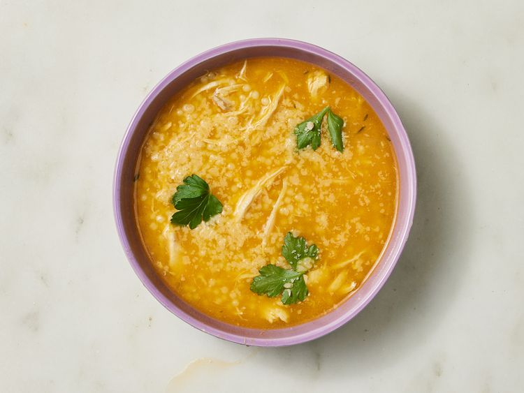

Italian Penicillin Soup

Sometimes, the best remedy for a cold — or just a long day — is a steaming bowl of soup.
Enter Italian Penicillin Soup, lovingly known as Sick Day Soup or Chicken Pastina Soup!
Description
Ingredients
- 8 cups lower-sodium chicken broth
- 2 cups chopped sweet onion
- 1 1/2 cups peeled and coarsely chopped about two carrots
- 2 celery ribs, coarsely chopped
- 6 garlic cloves, smashed and peeled
- 3/4 teaspoon kosher salt
- 4 thyme sprigs
- 2 fresh bay leaves
- 2 ounces Parmigiano-Reggiano cheese rind, plus grated cheese for garnish
- 4 ounces uncooked pastina pasta
- 2 cups shredded rotisserie chicken
- Fresh flat-leaf parsley leaves
- Gather all ingredients.
- Bring broth, onion, carrots, celery, garlic, and salt to a boil in a large saucepan or small Dutch oven over high
; reduce heat to medium-low, and simmer until vegetables are softened, about 10 minutes.
Using a slotted spoon, transfer vegetables and 1 cup of broth to a blender.
- Secure lid on blender, and remove center piece to allow steam to escape.
Place a clean towel over opening.
Process until smooth, about 30 seconds.
Stir blended carrot mixture back into soup.
- Add thyme sprigs, bay leaves, and Parmigiano-Reggiano cheese rind.
Bring to a boil over medium-high.
Add pasta, reduce heat to medium-low, and simmer, stirring occasionally, until pasta is tender, 18 to 20 minutes, adding shredded chicken in the last 3 minutes of cooking.
- Remove from heat.
Remove and discard thyme sprigs, bay leaves, and Parmigiano-Reggiano cheese rind.
- Serve immediately, and garnish with parsley and grated Parmigiano-Reggiano!
Home